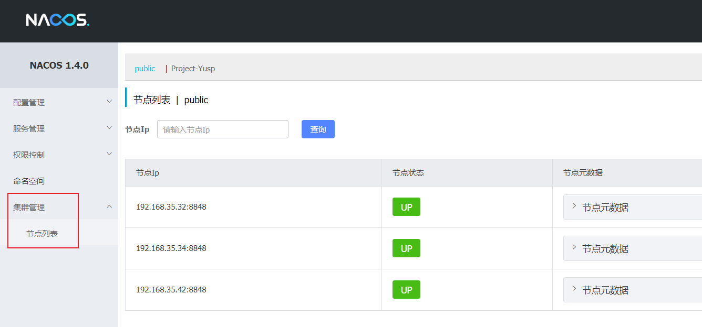

什么是Nacos
Nacos 致力于帮助您发现、配置和管理微服务。Nacos 提供了一组简单易用的特性集，帮助您快速实现动态服务发现、服务配置、服务元数据及流量管理。
Nacos 帮助您更敏捷和容易地构建、交付和管理微服务平台。 Nacos 是构建以“服务”为中心的现代应用架构 (例如微服务范式、云原生范式) 的服务基础设施。
集群部署架构
官方推荐的架构图如下

官方推荐域名 + VIP模式部署，可读性好，而且换ip方便。一般我们使用Nginx替代VIP来负载多台Nacos服务即可。
注意: 3个或3个以上Nacos节点才能构成集群
部署实践
环境准备
| 服务 | IP |
|---|---|
| Nacos Server 1 | 192.168.35.32 |
| Nacos Server 2 | 192.168.35.34 |
| Nacos Server 3 | 192.168.35.42 |
| Nginx | 192.168.35.31 |
说明: 这几台服务均是CentOS 7操作系统
安装Nacos Server
在三台机器上分别安装Nacos Server
- 下载
Nacos Server官方安装包
下载地址: https://github.com/alibaba/nacos/tags
注意：本文档写作时Nacos Server的版本为
1.4.0
解压
1unzip nacos-server-1.4.0.zip修改配置
1 2 3 4cd nacos/conf # 复制一份cluster.conf文件出来 cp cluster.conf.example cluster.conf vi cluster.conf将三台Nacos Server的机器IP和端口号写入
cluster.conf文件1 2 3
192.168.35.32:8848 192.168.35.34:8848 192.168.35.42:8848
三台Nacos Server的
cluster.conf文件都这样配置
- 启动Nacos Server
执行命令：
|
|
终端输出如下日志：
|
|
查看日志中提到的start.out文件：
|
|
可以看到，日志中打印了配置的[192.168.35.32:8848, 192.168.35.34:8848, 192.168.35.42:8848]三台机器的IP和端口信息，并且服务以集群模式启动成功，同理，启动另外两台机器上的Nacos Server。
- 验证
分别使用三台Nacos Server的控制台(http://ip:port/nacos)进行登录访问，点击左侧菜单的集群管理 -> 节点管理, 可看到三个服务实例都为UP状态就说明整个集群模式部署成功了。

- Nginx配置
编辑192.168.35.31的Nginx配置文件
在http节点内添加如下配置：
|
|
重启Nginx:
|
|
- 通过Nginx访问Nacos Server控制台
访问: http://192.168.35.31:8848/nacos
能正常访问，说明Nginx的配置正常。
- 微服务连接Nacos Server
配置文件中，直接配置Nginx负载的地址即可。
|
|
附：
更多资料请参考Nacos官方文档：https://nacos.io/zh-cn/docs/cluster-mode-quick-start.html